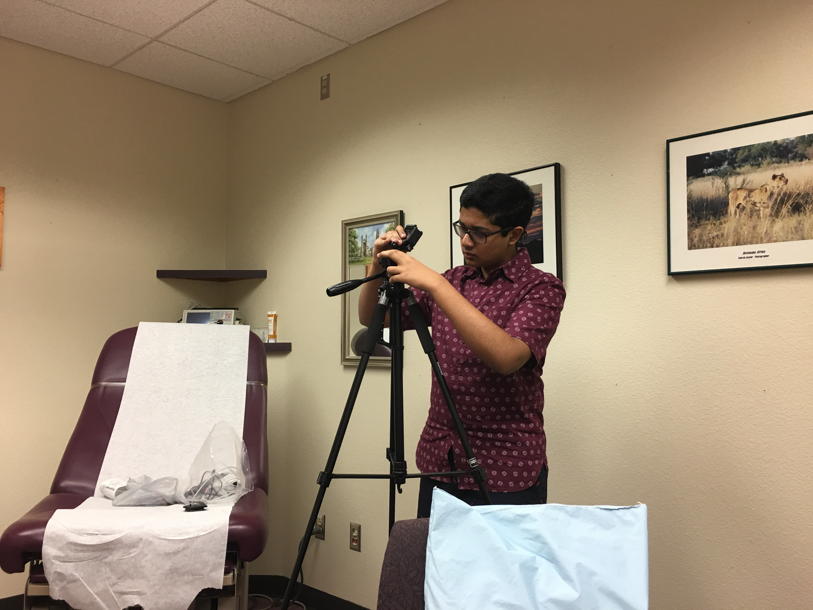

These are some selected educational opportunities that I have engaged with that enhance my overall portfolio.

INTERNSHIPS
Over the summer, I travelled to the University of Arizona at Tucson, where I worked with Professor Marvin Slepian and his team in the Department of Biomedical Engineering on an ongoing project. We are designing a "Smart Room," which aims to use computer vision and big-data analytics to produce better patient outcomes by extracting healthcare-related information from doctor-patient interactions. I have attached some of the documentation pertaining to the Smart Room project below:
◦ Proof of Concept #2, Final Report
◦ Proof of Concept #3, Deliverable
◦ Prototype Room: Camera Setup Procedure

CAREER DEVELOPMENT PLANNING
The Tech Challenge (2014-2017)
I am a four-time competitor and five-time award-winner in the Tech Challenge, an engineering and technology competition hosted by the Tech Museum of Innovation. I have lead a team of fellow Cupertino High School students to four consecutive wins, consistently beating out a field of more than 2,500 competitors, scoring:
◦ 2nd place Outstanding Engineering Journal (2014);
◦ 2nd Place Outstanding Engineering Process (2015);
◦ 1st Place Outstanding Engineering Journal (2016);
◦ 3rd Place Outstanding Engineering Process (2016);
◦ 1st Place Outstanding Engineering Journal (2017).
In my years in the Tech Challenge, I have gained experience in problem solving, hardware engineering, leadership, and management, and I have honed my ability to be a team player. In addition, I have collected a small number of photos to document my Tech Challenge experience. Click here to see my Tech Challenge gallery. Please visit their website for more information.

COMMUNITY SERVICE
I have saved a great number of photos in order to keep track of my volunteering. Click here to see my volunteering gallery.
FBLA Middle Level Operations (2015-2017)
Through my leading role in my chapter’s Middle Level project, I have been integral in helping more than 150 students, ranging from the ages of 10-14, gain an appreciation and love for business. In Middle Level, I prepared and delivered bi-weekly lectures and educational activities about various business fields to students at Hyde Middle School, and assisted them in preparing for the annual Pseudo-Bay Sections, a mock FBLA conference giving younger students the opportunity to attempt competitive events even before entering high school. In my two years of Middle Level, I accumulated more than 45 service hours.
Volunteering at the Tech Museum of Innovation (2016-2017)
I spent two years volunteering at The Tech, a family-oriented interactive science and technology center located in San Jose, California. On a biweekly basis, I was in charge of operating a vast variety of exhibits, educating members of the general public on fields ranging from space exploration, geology, robotics, cybersecurity, acoustics, and bioengineering. Overall, I earned more than 50 cumulative service hours at the Tech. Please visit their website for more information.
Volunteering with the California Scholarship Federation (2015-Present)
As a three-year member of my school’s CSF club, I have given my time to a variety of marathons and charitable organizations. In all, I have accumulated approximately 20 service hours through CSF. Please visit their website for more information.
Volunteering with the National Honor Society (2016-Present)
I have been a member of my local NHS for the last two years. Just as with CSF, I have participated in a variety of marathons and charitable organizations. Similarly, I have gained approximately 10 service hours through NHS. Please visit their website for more information.
Member of my Local Peer Tutoring Program (2016-Present)
Over the last two years, I have been a leading tutor at the Cupertino High School Library, aiding around 20 students on mainly STEM-related coursework on a weekly basis. I was selected as a peer tutor based on my academic merit. In the process, I accumulated more than 35 service hours.